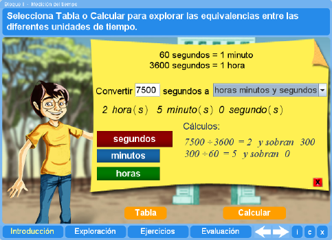
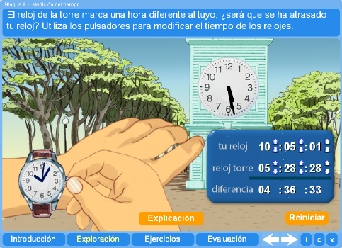
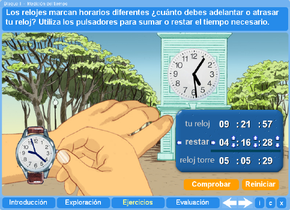
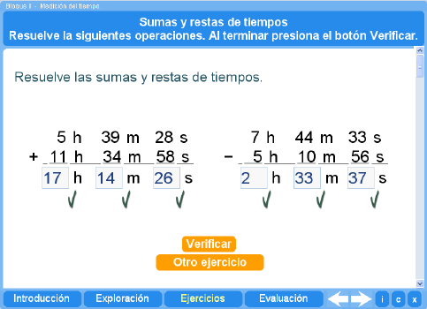

Objetivo
Aprender a describir las medidas de tiempo en días, horas, minutos y segundos y a realizar operaciones de suma y resta con medidas de tiempo.
Instrucciones generales
Se puede navegar entre los apartados con el menú de la parte inferior. Este menú aparece a lo largo de todo el interactivo y conserva su funcionalidad.

También se puede navegar por las escenas por medio de las flechas de navegación que aparecen en el lado inferior derecho del interactivo. Dentro de los apartados Exploración y Ejercicios es necesario utilizar estas flechas para acceder a las escenas sucesivas de dichos apartados.

En la parte inferior derecha del interactivo se encuentran los siguientes botones:
| Muestra la documentación del interactivo. | |
| Despliega los créditos correspondientes a este interactivo. | |
| Cierra el interactivo. |
Contenidos
Introducción
Muestra una tabla de equivalencias entre las distintas unidades de medición del tiempo y la manera de convertir algunas de estas unidades a otras.

Exploración
El alumnos deberán encontrar la diferencia entre dos tiempos dados.

Ejercicio 1
El alumno deberá decidir si debe adelantar o retrasar su reloj (sumar o restar un tiempo) y por cuánto, para poner su reloj a la misma hora que el de la torre.

Ejercicio 2
El alumno deberá resolver una suma y una resta de tiempos expresados en horas, minutos y segundos. Los datos de las operaciones se generan aleatoriamente y el alumno podrá realizar tantos ejercicios como quiera.

Evaluación
La evaluación consta de dos preguntas. La primera le muestra tres operaciones de suma o resta de tiempos y le pide decidir cuáles están bien hechas. La segunda pregunta consiste en resolver tres operaciones con horas, minutos y segundos.

Ambas preguntas se presentan de manera aleatoria. El estudiante puede resolver otras evaluaciones. La escena lleva un registro del número de buenas y malas por cada evaluación, el número de evaluaciones contestadas y la media de las mismas.
| Los materiales aquí presentados utilizan el applet Descartes Web 2.0. | |
| Los contenidos de esta unidad didáctica están bajo una licencia de Creative Commons. | |